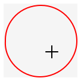
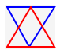
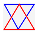
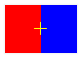
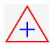
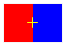
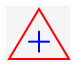
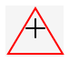

Lecture 35: Dynamic Programming
Using data to avoid redundant computation
35.1 A motivating example: Squeezing pictures
In Assignment A-squeezing, you will be working on a fairly sophisticated algorithm to
“squeeze” images to fit into a smaller region, without sacrificing any of
the “interesting” regions of the image. Intuitively, our goal is to find
some connected path from one side of the image to the opposite side, such that
that path is as “boring” as possible, and remove those pixels. We can define
“boring” in a number of ways, but for now let’s just assume that a pixel is
interesting if it is different enough in brightness from its neighbors. That
way, stripes or rapidly changing areas of color will be interesting —
In order to ensure that we remove pixels in a sensible way, we need to remove a connected path from one side of the image to another. A path is connected if every pixel is adjacent to or diagonally adjacent to the next pixel. But how can we compute the “most boring path” efficiently? Think for a moment about a vertical path, that ends at the middle pixel of the bottom row.

How might we have gotten there? Well, the previous pixel in the path could have been any of the three pixels directly above it.

How might we have gotten to any of them? Each of them has three pixels
above them, for a total of nine; each of those nine have three pixels above
them, etc. —
But is it really that bad? Looking more carefully at the paths:

There appears to be a great deal of overlap between the paths. There are three
different ways to get from  to
to  ; there are two
ways to get to ; etc. Consider the “most boring” path to
; there are two
ways to get to ; etc. Consider the “most boring” path to
 , and suppose it goes through
, and suppose it goes through  . Critically, the
most boring path must include the most boring way to get to
– or else we could find an even more boring path to get to
. But to compute the most boring path to , we must
compute the most boring path to . So why bother recomputing
that again when we try to compute the most boring path to or
? Wouldn’t it be better to compute that answer once and for all,
and reuse that answer as needed?
. Critically, the
most boring path must include the most boring way to get to
– or else we could find an even more boring path to get to
. But to compute the most boring path to , we must
compute the most boring path to . So why bother recomputing
that again when we try to compute the most boring path to or
? Wouldn’t it be better to compute that answer once and for all,
and reuse that answer as needed?
In fact, this sort of problem comes up quite often, and there are some powerful techniques to solve them. When the problem has the following hallmarks:
The problem can be solved recursively
There are lots of subproblems to be solved
The same subproblems show up as part of several other subproblems
we can likely find a solution that runs much faster than the simple recursive one, if we’re a bit clever about it. This technique is known as dynamic programming (though it has nothing to do with “dynamic” dispatch or “progamming” as we refer to it). Let’s start with a simple example, and work our way back up to the original problem.
35.2 A simple example: Fibonacci numbers
35.2.1 Step 0: Naive recursive solution
We’ve seen the computation for Fibonacci numbers several times before:
int fib(int n) { if (n == 0) { return 1; } else if (n == 1) { return 1; } else { return fib(n - 1) + fib(n - 2); } }
Do Now!
What is the runtime of fib, as a big-\(O\) function of n?
When n is small, the function takes constant time. But to see how long it takes for larger n, we should draw out the call tree, and see how many calls are made:

Looking at a larger tree (where we only draw the argument \(n\), for brevity):

It’s pretty clear in this case that the longest path in the tree is the leftmost one and is as tall as \(n\), and the shortest path is the rightmost one and is as tall as \(n/2\).
Do Now!
Why?
Crucially, this tells us the number of nodes of the tree! Since the shortest path is \(n/2\), and every other path is longer than that, we know that the tree is full to depth \(n/2\), which means it contains at least \(2^{n/2}\) nodes. Further, since it’s at most \(n\) nodes tall, it contains at most \(2^n\) nodes. Therefore, the tree is \(O(2^n)\) elements big.
(We can actually be a bit more precise. The lower bound of \(2^{n/2}\) equals \((2^{1/2})^n = \sqrt{2}^n \sim 1.4142^n\) The upper bound is \(2^n\). A careful analysis will show that the exact quantity is \(\phi^n \sim 1.516 ^ n\), where \(\phi = (1 + \sqrt 5)/2\) is the golden ratio. It’s nice to see that the exact value really does fall between our lower and upper bounds!)
35.2.2 Improvement 1: memoization
Relative to n, how many times do we compute fib(n - i) while computing fib(n), for any particular i?
int fib(int n) { ArrayList<Integer> answers = new ArrayList<Integer>(); fibAcc.add(1); // Base cases: fib(0) = 1 fibAcc.add(1); // fib(1) = 1 fibAcc(n, answers); return answers.get(n); } int fibAcc(int n, ArrayList<Integer> answers) { // Check for redundant computation if (answers.size > n) { return answers.get(n); } // Compute the new things: if (n == 0) { return 1; } else if (n == 1) { return 1; } else { int ans = fib(n - 1, answers) + fib(n - 2, answers); fib.add(ans); return ans; } }
When used in this way, we refer to this sort of accumulator as a memo table: it lets us “take notes” about subproblems we’ve already seen. We refer to the entire technique as memoization of an existing function.
Do Now!
Why do you think the memo table for fib was an ArrayList<Integer>? Is there anything about the signature for fib that would suggest so?
Now, how many times do we call fibAcc for a given n? As we evaluate the call tree above, as we go down the leftmost path, we’re constantly encountering new subproblems, so we must evaluate each call at least once. But for every other call, we’ll already have computed the answer, so we’ll skip all the recursive calls!
Now, we only ever call fib with each value of n at most twice, so our runtime is now linear. Quite an improvement from \(O(2^n)\)! Though it did come at some cost: we’re now using \(O(n)\) space to store the intermediate results.
35.2.3 Improvement 2: Iterative vs recursive solutions
Looking carefully at our code, we see that we recursively fill in the table of answers, such that the second time we need a given answer, it’s waiting for us. But the recursive structure of the code doesn’t match the order in which we fill in the table. We’re calling functions in a “top-down” order (from bigger values of n to smaller ones), but we’re filling in the table in the other order. Can we revise our code to match that filling-in order?
Do Now!
Try this.
Here is one possible answer:
int fib(int n) { ArrayList<Integer> answers = new ArrayList<Integer>(); answers.add(1); answers.add(1); for (int i = 2; i < n; i += 1) { answers.add(answers.get(i - 1) + answers.get(i - 2)); } return answers.get(n); }
Without too much trouble, we see that we can fill in the table “bottom-up”, from low indices to higher ones. Note that this solution looks almost nothing like our previous recursive one, and there’s very little in the problem that would suggest this as a solution. We arrived at this approach by considering the bookkeeping in the previous memoized solution.
35.2.4 Improvement 3: Eliminating some bookeeping
Now that we have an iterative, table-based solution, we can make one final observation: we don’t need most of the table! Indeed, once we’ve computed answers at index \(i\), we never need to access indices \(i - 2\) or lower. So we could arrive at our fourth and final design for this function:
int fib(int n) { if (n == 0) { return 1; } else if (n == 1) { return 1; } else { int prev = 1; int cur = 2; for (int i = 2; i < n; i += 1) { int next = prev + cur; prev = cur; cur = next; } return cur; } }
We now have a solution that takes \(O(n)\) time and \(O(1)\) space, which is pretty clearly optimal.
Exercise
Actually, for this particular problem, there exists a closed-form formula to compute the answer directly: \(fib(n) = (\phi^n - (1-\phi)^{-n})/\sqrt 5\). But this appears to take \(O(n)\) multiplications, so it’s no faster than our iterative solution above... Can you implement a solution that computes the answer in \(O(log n)\) multiplications? Is that better or worse, in practice? (Hint: doubles...)
35.2.5 Strategy Recap
Our initial problem had a nice, straightforward recursive solution that was woefully inefficient. In particular, we noticed that it was repetitively computing the same subproblems many, many times. So we decided to memoize the function, by adding an accumulator parameter that would store all the sub-answers we encountered in the recursion, and eliminate the need to compute them again.
At this point, our algorithm ran much faster. And in many cases, in practice, you could probably stop here! But, it is possible to do better: if we shift our attention from the recursive structure of the problem to the filling-in structure of the accumulator, we see that our code isn’t organized correctly. We can therefore revise our code to fill in the table in a systematic order, using loops and iteration rather than recursion, and thereby get a more obvious performance bound for our new code.
Lastly, we might get lucky and notice that some of our accumulated state is only needed for a little while, and that as we progress through our loop, we can “forget” some earlier results. This may lead to one last performance boost for our algorithm, such that it uses far less space than we initially may have expected.
35.3 Another problem: Savvy shoppers
Suppose you’re a contestant on a shopping-spree gameshow, where there are only a few rules:
Each item has a cost (in dollars) and a score (in points)
You may only buy at most one of each item
You have a budget of some number of dollars
Your goal is to fill a shopping cart with items that maximize your score while staying under budget – if you go over budget, you automatically lose.
Do Now!
How do you win?
35.3.1 Step 0: Naive recursive solution
Actually, merely coming up with a recursive solution isn’t so trivial this time! Our goal is to find a way to break the problem down into subproblems that “repeat” somehow, so that we can reuse answers along the way. At first, we might try a divide-and-conquer approach, and think that we could split the items into two groups, divide our budget in half among them, and pick the best shopping carts for the two halves: surely the combination of those two best halves should give a best total cart?
Unfortunately not: there’s no obvious way to split the budget between the two groups of items. For example, suppose there were only two items: Item A costs \$10 and is worth 50 points, and item B costs \$1 and is worth 1 point. If our budget is \$10, then if we split the budget at all, we will only be able to buy Item B, and we’ll lose. (In general, constructing “extreme” edge-case examples like this is a good strategy towards breaking any “obvious” solutions.)
However, let’s consider what decisions we get to make during this problem. For each item, we can choose whether to purchase it or not. Let’s examine the two possibilities:
If we purchase item \(i\), we have gained \(score(i)\) points, and we’ve spend \(cost(i)\) dollars of our budget.
If we skip item \(i\), we have gained zero points, but we still have all of our budget.
This suggests a possible strategy: we’ll recur through the list of each of our items, and we’ll choose the maximum of either purchasing the current item or skipping it:
int bestScore(ArrayList<Integer> scores, ArrayList<Integer> costs, int budget) { return bestScoreHelp(scores, costs, 0, budget); } int bestScoreHelp(ArrayList<Integer> scores, ArrayList<Integer> costs, int curItemIndex, int remainingBudget) { // Base case: no more items if (curItemIndex >= scores.size()) { return 0; } else { // Recursive case: take the better of... return Math.max( // Try buying this item scores.get(curItemIndex) + bestScoreHelp(scores, costs, curItemIndex + 1, remainingBudget - costs.get(curItemIndex)), // Skip buying this item bestScoreHelp(scores, costs, curItemIndex + 1, remainingBudget) ); } }
35.3.2 Improvement 1: Memoization
Exercise
Add a memo-table to the solution above. What should its type be? How can you tell?
Since there are two arguments that change during our recursive calls, we need a 2-dimensional (i.e. nested) ArrayList. Since our function returns an int, our table should be an ArrayList<ArrayList<Integer>>. We need to choose a meaning for the indices of this array, though: let’s arbitrarily choose that the outer index means curItemIndex and the inner index means remainingBudget, just to match our parameter order in our function.
int bestScore(ArrayList<Integer> scores, ArrayList<Integer> costs, int budget) { ArrayList<ArrayList<Integer>> memos = new ArrayList<ArrayList<Integer>>(); // It's a bit easier to pre-fill the array with placeholders, // than to try to dynamicalaly fill it during the algorithm itself. for (int idx = 0; idx < scores.size(); idx += 1) { ArrayList<Integer> vals = new ArrayList<Integer>(); for (int b = 0; b < remainingBudget; b += 1) { vals.add(Integer.MAX_VALUE); // Placeholder value to mark invalid answers } memos.add(vals); } bestScoreMemo(memos, scores, costs, 0, remainingBudget); return memos.get(0).get(budget); } int bestScoreMemo(ArrayList<ArrayList<Integer>> memos, ArrayList<Integer> scores, ArrayList<Integer> costs, int curItemIndex, int remainingBudget) { // Lookup memoized answer: if (memos.get(curItemIndex).get(remainingBudget) != Integer.MAX_VALUE) { return memos.get(curItemIndex).get(remainingBudget); } // Base case: no more items if (curItemIndex >= scores.size()) { return 0; } else { // Recursive case: take the better of... int ans = Math.max( // Try buying this item scores.get(curItemIndex) + bestScoreAcc(memos, scores, costs, curItemIndex + 1, remainingBudget - costs.get(curItemIndex)), // Skip buying this item bestScoreAcc(memos, scores, costs, curItemIndex + 1, remainingBudget) ); memos.get(curItemIndex).set(remainingBudget, ans); return ans; } }
Do Now!
Why is the final answer found at memos.get(0).get(budget)? What in the original code tells you so?
35.3.3 Improvement 2: Interative solution
Exercise
Revise the code above to fill in the table, in order using loops rather than recursively.
Exercise
How much time does this new solution take, as a big-\(O\) function? What are the relevant arguments?
Exercise
How much time does the memoized version take? Is it the same, or smaller? Why?
35.3.4 Improvement 3: Less space?
Exercise
Can you “play the same trick” as we did for Fibonacci numbers, and eliminate some of the storage? Why or why not?
35.3.5 Enhancement: reading out the solution
We may want to know more than just “what is the maximum score we can achieve?” We might want to also know “which items do we need to buy to get that score?” How might we do that? The simplest approach seems to be just build a second accumulator, an ArrayList<ArrayList<Boolean>> decisions, whose interpretation is, “for a given item index and budget, should we buy this item or not?” We can update this table in our recursive case, so that it essentially tells us which of the two scores was chosen as maximum.
Do Now!
Will that be enough to read out the entire solution?
We know that our maximum score shows up in memos.get(0).get(budget). So if we look in decisions.get(0).get(budget), we’ll see whether we purchased item 0 or not. If we skipped it, then we know our next purchase decision can be found at decisions.get(1).get(budget). If we bought it, then our next purchase decision can be found at decisions.get(1).get(budget - costs.get(0)). Looking at that boolean will tell us whether we should purchase item 1 or not, and we can work our way back through the table as needed.
Do we really need this extra table, though? Can we do better?
Do Now!
Try to eliminate this extra decisions table. Is there another way to deduce what the correct purchase decisions were?
Since we know that decisions.get(0).get(budget) must either equal decisions.get(1).get(budget) or equal scores.get(1) + decisions.get(1).get(budget - costs.get(1)), why not just look at those two values? If we equal the first one, then we must not have purchased item 0; if we equal the second, then we must indeed have purchased it. (And if they’re tied, then it didn’t matter!)
So our memo table contains all the information we need to reconstruct not just the value of the final solution, but also which items go into making it. Not a bad deal!
Exercise
Once again, can you eliminate some of the storage requirements of this algorithm? (If your answer has changed from above, why? If it’s the same, why?)
Exercise
Open-ended: now that we’re looking at which items go into our solution, we might also want to ask, “how many solutions are there of maximum value?” The memo table we’ve constructed should already have enough information for you. Design a function countSolutions that takes the memo table (and the costs and scores lists) and computes how many solutions there are. What is the worst-case number of solutions, and what example costs and scores could you set up to force that scenario?
35.3.6 Strategy Recap
This problem is known formally as the
0-1
Knapsack Problem. We say that this algorithm runs in pseudo-polynomial
time, because it runs in time proportional to the budget. But we can
represent really big numbers using really few digits —
35.4 Back to images
The motivating example at the start of this lecture is, in hindsight, clearly calling for a dynamic programming solution. In the homework, we will give you the suggested solution for how to structure the table you’re building (though it won’t be a nested ArrayList, per se), and we’ll show you how to read out the solution that you’ve computed. (Not all dynamic programs compute atomic data as answers!) As you work through that problem, try thinking through the four-step process above, and see if you can figure out which step corresponds best to the structure you’re working with in the assignnment.
Exercise
Can you “work backwards” from whichever step you’re at in the assignment, backwards towards the naive recursive solution?